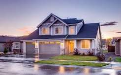
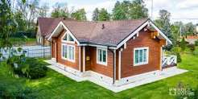

Каталог готовых архитектурных проектов коттеджей myhouse.ru явился результатом многолетней работы лучших российских специалистов в области архитектуры и строительства.
Это своего рода «Собрание сочинений» от современной загородной архитектуры, в котором каждый может найти что-то свое.
Проекты коттеджей из каталога нельзя называть типовыми, поскольку разрабатывались они в порядке индивидуального проектирования непосредственно под нужды будущих владельцев загородных домов. Более 95% проектов реализовано в строительстве. Большая часть проектов реализована неоднократно, как в Московской области, так и по всей территории Российской Федерации, в странах ближнего зарубежья.
Экономическая составляющая и вопросы престижа не менее важны при выборе проекта дома. Разброс проектных площадей – велик. В настоящее время это дома от 50 до 1300 м2 общей площади. Часть из них можно отнести к дачам, в то время, как другую, смело причислять к образцам великолепной дворцовой архитектуры. Разумеется, средние по размерам проекты представлены наиболее полно и отражают все тенденции в современном коттеджном строительстве.
